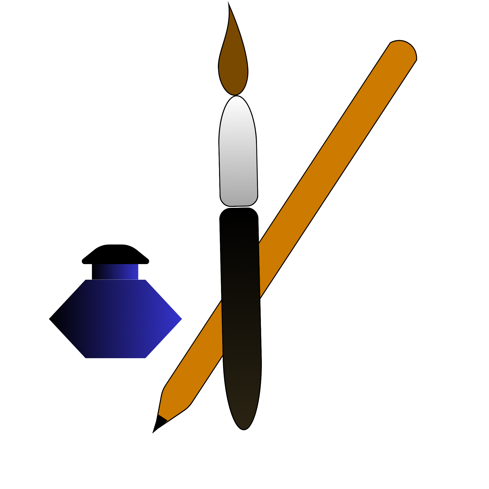

Although an astrophysicist by training, but I spend a fair amount of time looking and exploring things very terrestrial. I paint, sketch, and draw cartoons and caricatures; mostly as a way to represent complicated or sarcastic thoughts that lose their impact when stated in plain words. Candid photography is a newer obsession. I'm drawn to urban settings and cityscapes: the geometry of a straight road between buildings, a skyline from a bridge or rooftop, a view through a window, or a street corner where light and shadow create something almost surreal. Warsaw, Madrid, Paris, Valencia, Mumbai -- many cities have ended up on my smartphone camera; So have ancient architeture like the cave monastry of Ajanta, cave temples of Ellora, the ancient city of Pompeii, which are a different kind of awe entirely, and stretches of nature from hiking trails. Aspiring percussionist, slowly gaining expertise in tabla. Also an aviation enthusiast and at some point in my life I intend to learn how to fly an aircraft.
Lost amid the exuberant vitality of human agglomerations
See more..Tathagata from the current era meets Tathagata from BCE at his residence, the Ajanta cave monastry.....
See more..
Random scribbles when I get bored.
See more..